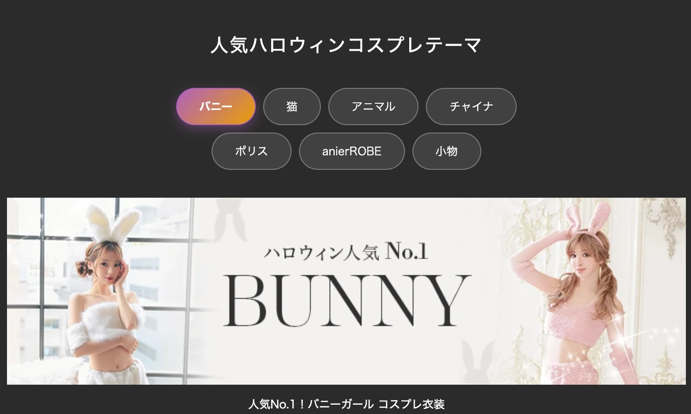
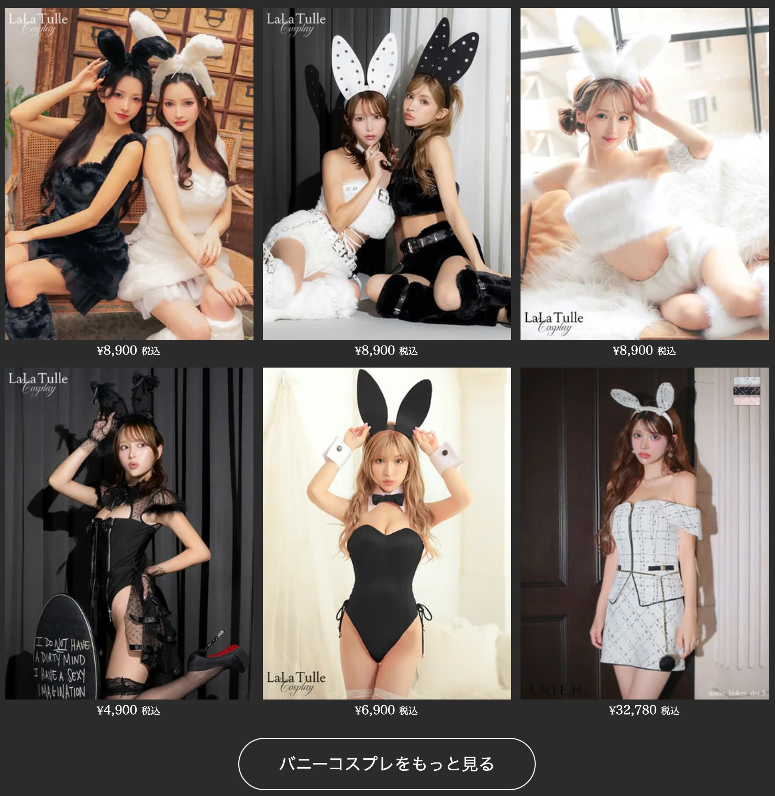

配置と測定の範囲
簡単検索の上部移動は担当者の記録に基づき、正確な移動距離は未計測です。既存の到達率・タップ頻度の数値は原集計表の再確認まで、この短い事例から外しています。
人気カテゴリと商品一覧への導線を見直し、代表バナーを変更しました。
担当：課題把握・分析・改善案・デザインを単独で担当
カテゴリと商品が縦に続き、目的のカテゴリ・商品一覧へ進むまでにページをたどる必要がありました。
人気カテゴリを前面に置き、代表バナーと商品一覧への導線を見直せば、目的の商品へ早く進めるのではないかと考えました。
1次改修 · 見出し・導線・代表バナーを変更
HTMLの見出しとカテゴリ導線を整理し、カテゴリ下の商品枠を3列×3段から3列×2段に変更しました。
ハロウィン特集ページ全体の改修前後
改善前 · カテゴリが縦に続くページ 1次改善後 · 見出し・導線・グリッドを変更
1次改善後 · 見出し・導線・グリッドを変更
既存ポートフォリオPDFから抽出した画面です。
保存HTMLで3列×3段→3列×2段を確認。掲載画像では動的商品部分が省略されています。
シーズン終了後の再改善 · カテゴリ切替を追加
シーズン終了後は、人気カテゴリを選んで商品を切り替える構成へ再改善しました。

シーズン終了後の再改善 · カテゴリタブとバナー

同じ画面 · 3列 × 2段の商品一覧
HTML構造を変える際は検索順位が下がるリスクも考慮し、順位・ページ内行動・購入指標を分けて確認しました。
比較条件と確認項目
既存資料には2025/9/14–16と8/1–31のユーザー当たり行動比較、2025/9/24–10/31と前年同期間の検索・自然検索データがあります。異なる期間と指標を同じ効果としてまとめません。
10月を含む既存結果は原資料を照合中で、会社成果の公開承認を待っています。CVR・商品閲覧とページ全体の指標を区別し、季節性や流入差を含む観測として扱います。
再改善の効果は別期間で確認し、カテゴリ到達・商品閲覧・購入までを分けて追う予定です。
- 問題
- 商品閲覧から購入への流れを改善したい。
- 判断・変更
- 閲覧人数UIを条件付きで表示し、A/Bの行動を比較。
- 確認
- 一部の率は上昇、購入開始率は低下。運用コストも含め終了。
B案 · 閲覧人数メッセージの実際の表示
検証できる範囲
UI原資料は2025/8/10–20。旧事例の率差はpp表記ですが、集計期間・分母・標本数を原資料で再確認できないため数値は空欄とします。統計的有意性や因果的改善は主張しません。
| カート追加率の差 |
— |
|---|
| 購入開始率の差 |
— |
|---|
| 購入率の差 |
— |
|---|